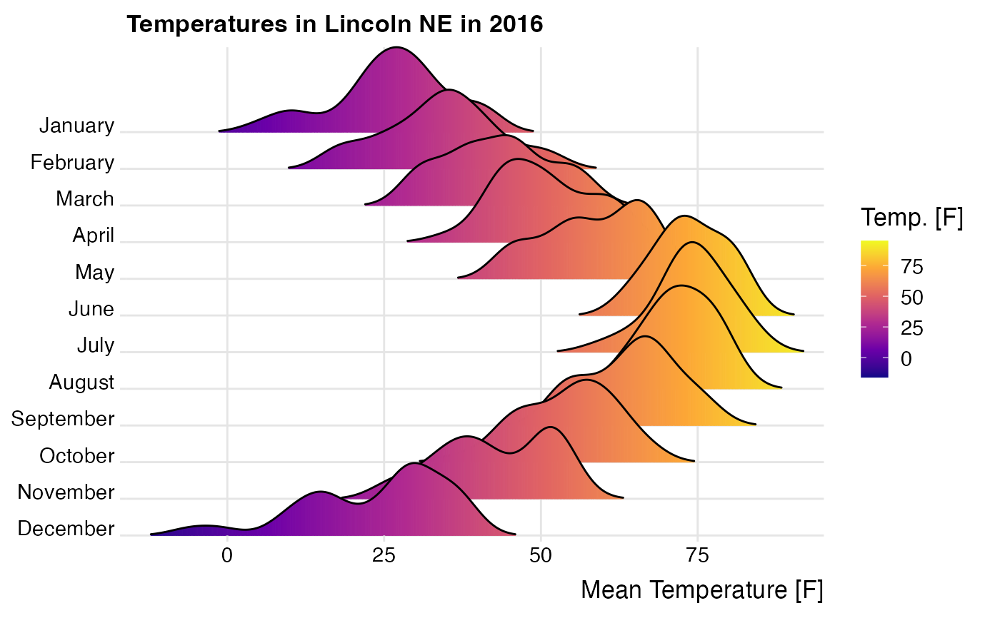
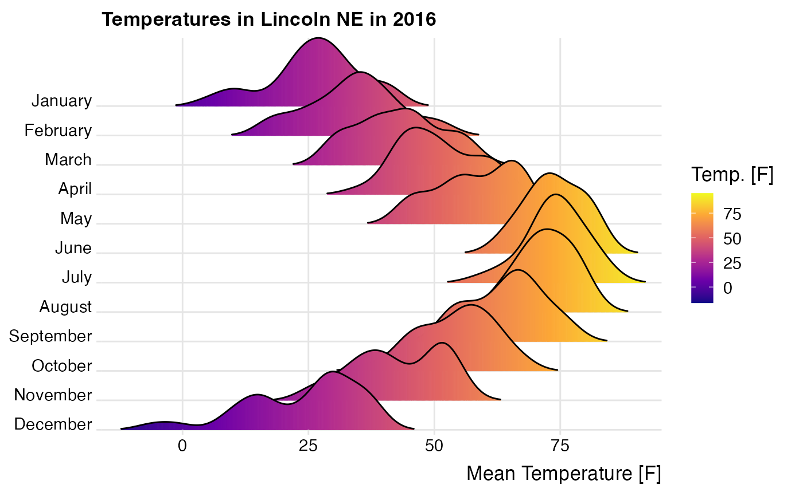

Plot ridgelines and ridgeline plots with fill gradients along the x axis
Source:R/geoms-gradient.R
geom_ridgeline_gradient.RdThe geoms geom_ridgeline_gradient and geom_density_ridges_gradient work just like geom_ridgeline and geom_density_ridges except
that the fill aesthetic can vary along the x axis. Because filling with color gradients is fraught with issues,
these geoms should be considered experimental. Don't use them unless you really need to. Note that due to limitations
in R's graphics system, transparency (alpha) has to be disabled for gradient fills.
geom_ridgeline_gradient(
mapping = NULL,
data = NULL,
stat = "identity",
position = "identity",
na.rm = FALSE,
gradient_lwd = 0.5,
show.legend = NA,
inherit.aes = TRUE,
...
)
geom_density_ridges_gradient(
mapping = NULL,
data = NULL,
stat = "density_ridges",
position = "points_sina",
panel_scaling = TRUE,
na.rm = TRUE,
gradient_lwd = 0.5,
show.legend = NA,
inherit.aes = TRUE,
...
)Arguments
- mapping
Set of aesthetic mappings created by
aes()oraes_(). If specified andinherit.aes = TRUE(the default), it is combined with the default mapping at the top level of the plot. You must supplymappingif there is no plot mapping.- data
The data to be displayed in this layer. There are three options:
If
NULL, the default, the data is inherited from the plot data as specified in the call toggplot().A
data.frame, or other object, will override the plot data.A
functionwill be called with a single argument, the plot data. The return value must be adata.frame., and will be used as the layer data.- stat
The statistical transformation to use on the data for this layer, as a string.
- position
Position adjustment, either as a string, or the result of a call to a position adjustment function.
- na.rm
If
FALSE, the default, missing values are removed with a warning. IfTRUE, missing values are silently removed.- gradient_lwd
A parameter to needed to remove rendering artifacts inside the rendered gradients. Should ideally be 0, but often needs to be around 0.5 or higher.
- show.legend
logical. Should this layer be included in the legends?
NA, the default, includes if any aesthetics are mapped.FALSEnever includes, andTRUEalways includes.- inherit.aes
If
FALSE, overrides the default aesthetics, rather than combining with them.- ...
other arguments passed on to
layer(). These are often aesthetics, used to set an aesthetic to a fixed value, likecolor = "red"orsize = 3. They may also be parameters to the paired geom/stat.- panel_scaling
Argument only to
geom_density_ridges_gradient. IfTRUE, the default, relative scaling is calculated separately for each panel. IfFALSE, relative scaling is calculated globally.
Examples
library(ggplot2)
# Example for `geom_ridgeline_gradient()`
d <- data.frame(
x = rep(1:5, 3) + c(rep(0, 5), rep(0.3, 5), rep(0.6, 5)),
y = c(rep(0, 5), rep(1, 5), rep(3, 5)),
height = c(0, 1, 3, 4, 0, 1, 2, 3, 5, 4, 0, 5, 4, 4, 1)
)
ggplot(d, aes(x, y, height = height, group = y, fill = factor(x+y))) +
geom_ridgeline_gradient() +
scale_fill_viridis_d(direction = -1) +
theme(legend.position = 'none')
 # Example for `geom_density_ridges_gradient()`
ggplot(lincoln_weather, aes(x = `Mean Temperature [F]`, y = `Month`, fill = stat(x))) +
geom_density_ridges_gradient(scale = 3, rel_min_height = 0.01) +
scale_x_continuous(expand = c(0, 0)) +
scale_y_discrete(expand = c(0, 0)) +
scale_fill_viridis_c(name = "Temp. [F]", option = "C") +
coord_cartesian(clip = "off") +
labs(title = 'Temperatures in Lincoln NE in 2016') +
theme_ridges(font_size = 13, grid = TRUE) +
theme(axis.title.y = element_blank())
#> Picking joint bandwidth of 3.37

# Example for `geom_density_ridges_gradient()`
ggplot(lincoln_weather, aes(x = `Mean Temperature [F]`, y = `Month`, fill = stat(x))) +
geom_density_ridges_gradient(scale = 3, rel_min_height = 0.01) +
scale_x_continuous(expand = c(0, 0)) +
scale_y_discrete(expand = c(0, 0)) +
scale_fill_viridis_c(name = "Temp. [F]", option = "C") +
coord_cartesian(clip = "off") +
labs(title = 'Temperatures in Lincoln NE in 2016') +
theme_ridges(font_size = 13, grid = TRUE) +
theme(axis.title.y = element_blank())
#> Picking joint bandwidth of 3.37
